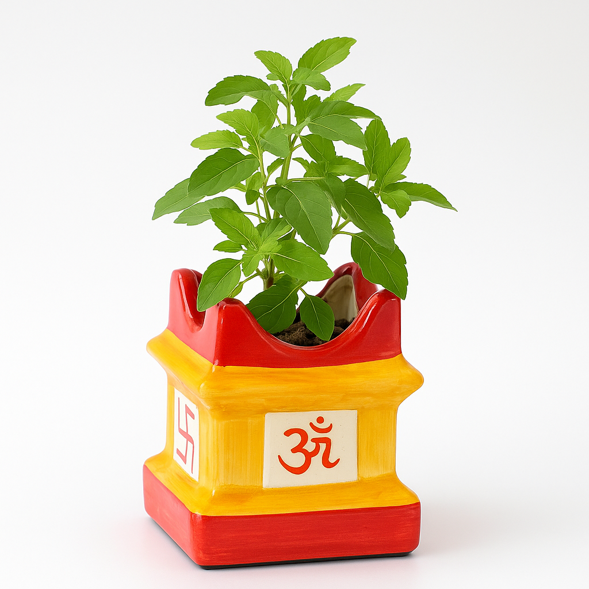

Tulsi is a sacred plant in India, valued for its fragrance and medicinal properties.
Requires bright sunlight for 4–6 hours daily.
Water every 2–3 days. Keep soil moist but not soggy.
Prefers 20–35°C.
Use rich soil with compost. Trim regularly for bushy growth.